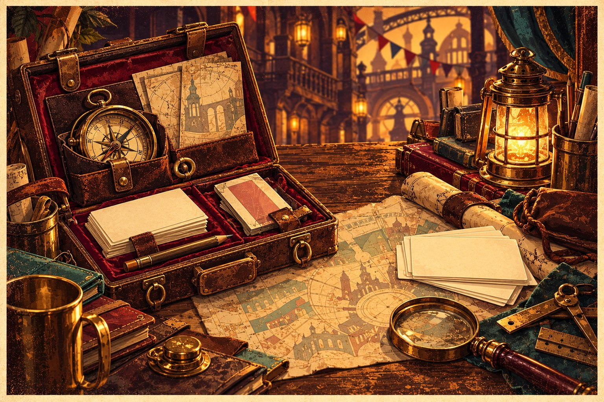
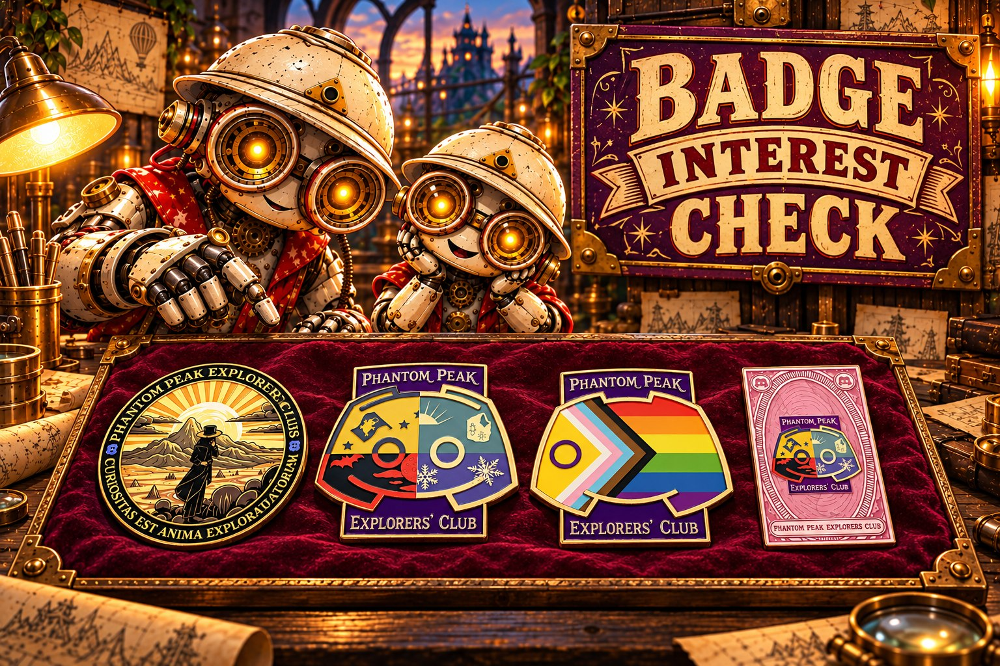

The Trail Archive
The club's trail records are ready for another look. Pick a season, search for a familiar face, or take the PDF with you.
Explore the archiveFrom the club desk
Useful tools for explorers. Revisit old trails, prepare for Stratford, follow a Jonabot mystery, or see what the club is making next.
Explore the toolsFor the curious, the prepared, and anyone who misplaced the instructions.

The club desk / PPEC tools
Choose a tool to explore its own site.
The club's trail records are ready for another look. Pick a season, search for a familiar face, or take the PDF with you.
Explore the archiveA story-led Jonabot puzzle trail through an increasingly unstable console. Your progress is saved on your device.
Start the trail
See the proposed PPEC pins and tell the club which designs you would genuinely buy if they are made. No order or payment is taken.
See the badge designsA quick check on Phantom Peak's reopening status and the countdown to its planned Stratford return.
Check if it's openCompare Phantom Peak dates with London Stadium events and check TfL travel notices before you set off.
Plan a visitFrom fellow explorers
Explore tools made by the wider PPEC community.